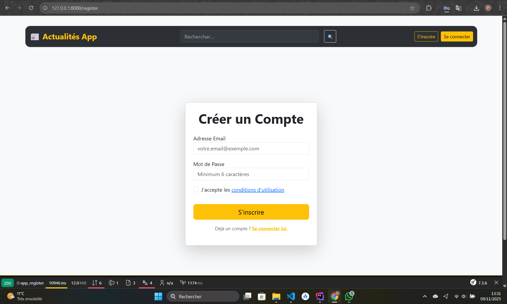
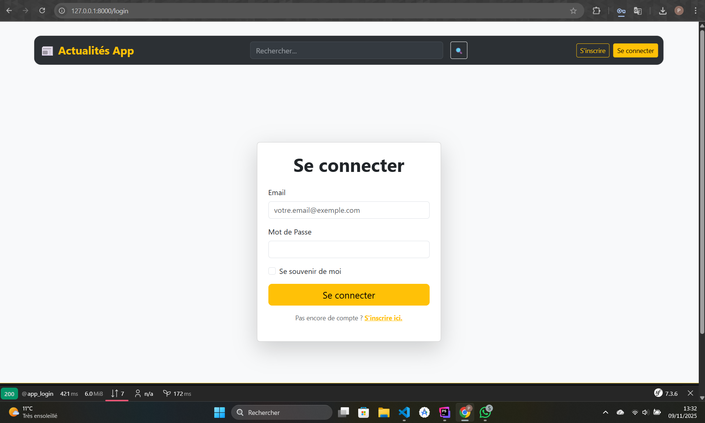
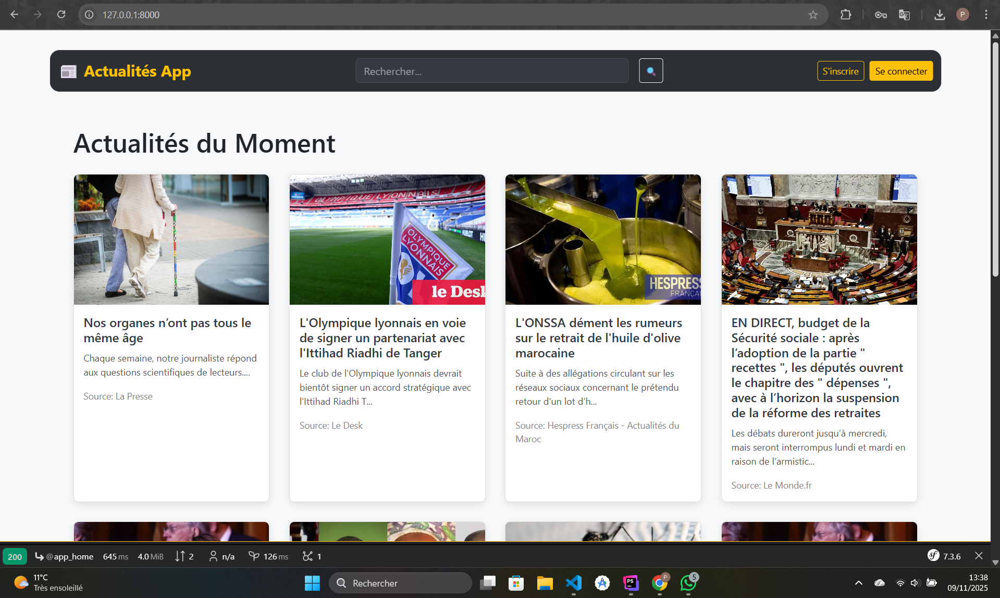
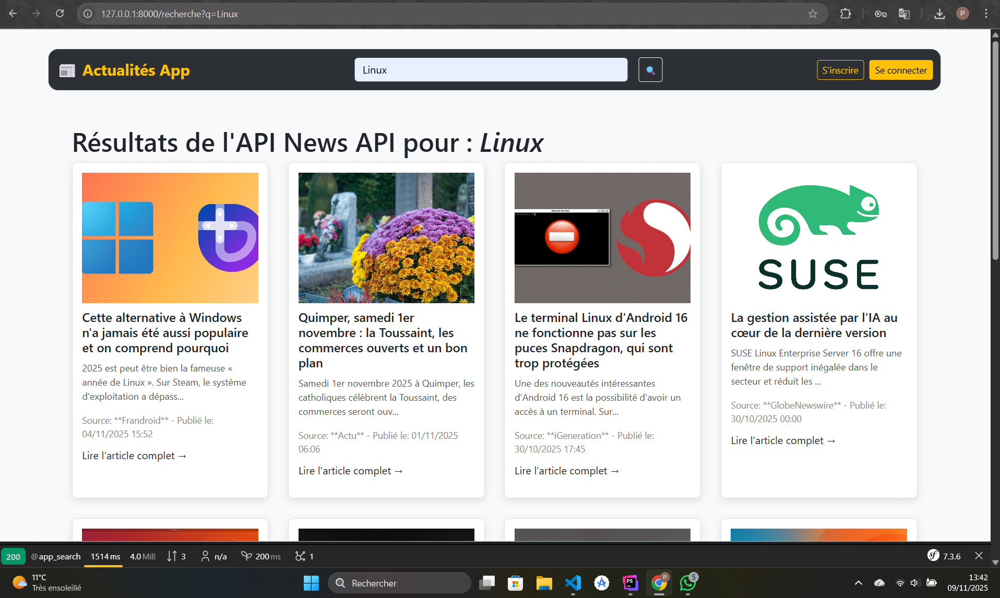
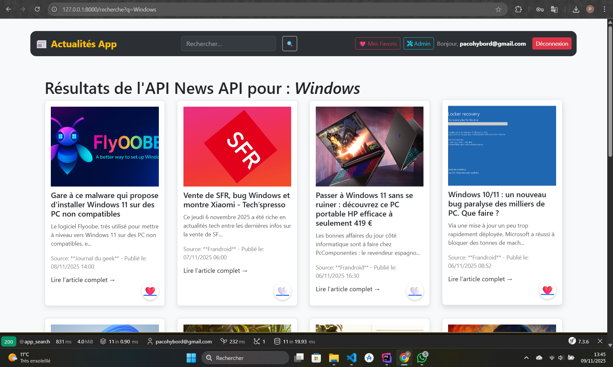
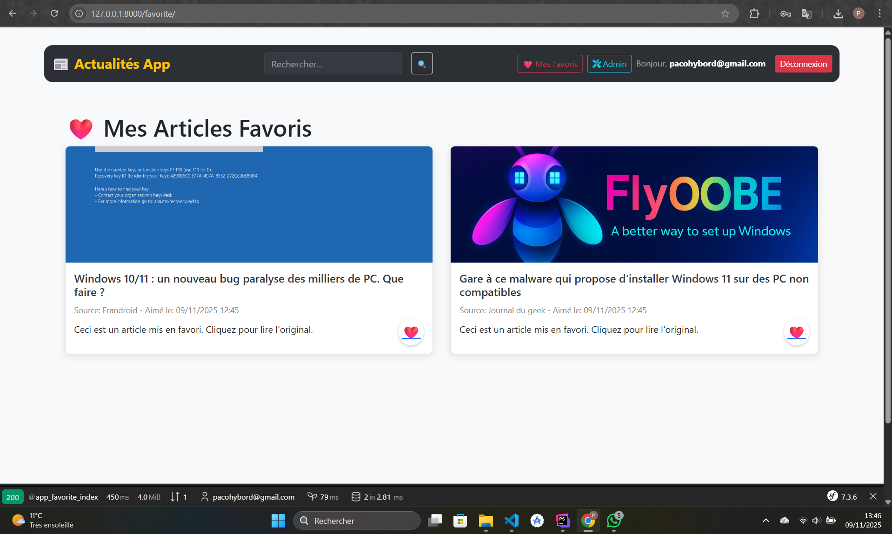

Création d'une application web dynamique sous **Symfony 7.3** permettant l'affichage d'actualités en temps réel, la recherche par mot-clé, et la gestion d'un espace utilisateur avec un système d'articles favoris.
Ce projet est une application web complète développée avec le **framework Symfony**. Elle permet aux utilisateurs de **visualiser l'actualité en temps réel** en intégrant les données d'une source externe via l'**API GNews**. L'application offre des fonctionnalités de **recherche par mot-clé** et une expérience utilisateur moderne grâce à **Symfony UX Turbo** pour des interactions fluides.
Un système complet d'authentification et d'autorisation a été implémenté avec **Symfony Security**, permettant la création de compte et la gestion des sessions.
Page d'inscription

Page de connexion

Les gros titres sont affichés sur la page d'accueil, injectés directement par le `HomeController` après l'appel à l'API GNews.

La fonctionnalité de recherche permet d'interroger l'API GNews en utilisant un formulaire non-Doctrine qui passe le mot-clé au `SearchController` pour l'affichage des résultats.

Le bouton de like utilise **Symfony UX Turbo** pour une interaction instantanée (AJAX). Les articles sont stockés dans l'entité `Favorite` et sont listés sur la page "Mes Favoris", gérée par le `FavoriteController`.

